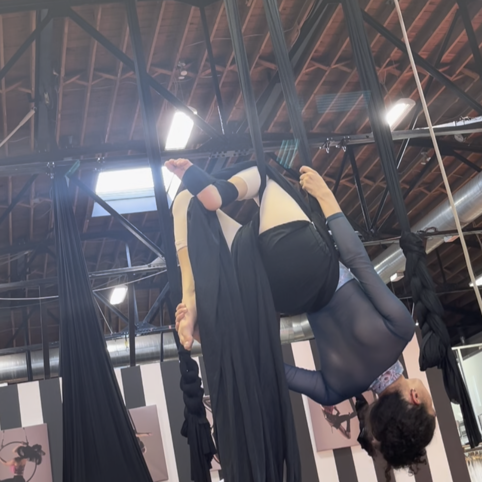

While pursuing a major in Computer Science, I also embraced the world of dance, seeking a major in
this expressive art form. In my quest for a hobby that resonates with the essence of dance yet
stands apart, I discovered the aerial arts.
The Ascent to a Personal Goal
Initially, the allure of the spotlight beckoned, and I contemplated a career as a performer. However,
as I delved deeper into the creation of choreographies, my perspective shifted. I now cherish aerial
arts as a treasured hobby, one that brings joy without the pressures that accompany a professional
dance career.
The Purpose of My Aerial Journey
Aerial arts have become a creative outlet for me, serving as a medium for crafting stunning visuals.
I harness this art form to capture photographs and create short videos that add a touch of the
ethereal to my social media presence, sharing moments of suspended beauty with an appreciative
audience.

Aerial Silk
My Aerial Experience
Aerial Silk
My journey began with Aerial Silks, where I have reached an advanced level. This style, characterized
by its fluidity and elegance, has become a space where I excel and express my aerial dance
narratives.
Aerial Lyra
The Aerial Lyra, was the second style I explored. Its allure lies in the stunning visuals it creates,
a blend of strength and poise suspended in air. Despite the inevitable bruises that are part of the
learning curve, my journey with the Lyra has been rewarding, though I admit mastery in this
apparatus eludes me still.
Aerial Hammock
Of all the styles, the Aerial Hammock holds a special place in my heart. It mirrors the aesthetic
appeal of Aerial Silks but is gentler on the body. The Hammock offers a balance of challenge and
accessibility, making it my preferred style and a constant in my aerial repertoire.
I have developed a self-sufficient method for capturing my aerial artistry. Typically, I use a phone
stand or even my water bottle to prop up my phone and frame the perfect shot.
Utilizing a Timer
Setting a timer is one of the simplest ways to photograph myself. However, the primary drawback is
timing—the camera might not capture the peak moment of my performance.
Extracting from Video
Alternatively, recording a video and extracting stills is a viable strategy. This method ensures I
don't miss the action, but it comes with a trade-off: the resolution of the images may not be as
high as I'd like.
Videos
Highlights from My Private Aerial SessionKey Moments from a Regular Group Aerial Silk Class
My Approach to Videography
Capturing my aerial performances on video is a solo endeavor. I often rely on creative solutions like
positioning my phone atop a stable surface, such as a stand or occasionally a water bottle, to get
the perfect angle.
Video for Still Images
Another technique I employ is shooting a video to capture the flow of my routine, from which I can
later select stills. While this method guarantees no missed moments, it does sometimes result in a
compromise on image clarity.
Aerial Silk
Updates
Pause for Health
My activities have been gentler of late, following an unexpected setback from a medical procedure
that necessitated an extended hiatus.
Recent Endeavors
In the interim, I've dedicated myself to regular Pilates sessions and have been diligent with my
physical therapy appointments, ensuring a strong foundation for recovery.
Looking Ahead
With optimism, I am charting a course for my return to aerial arts in the upcoming months,
anticipating the moment I can soar once again.